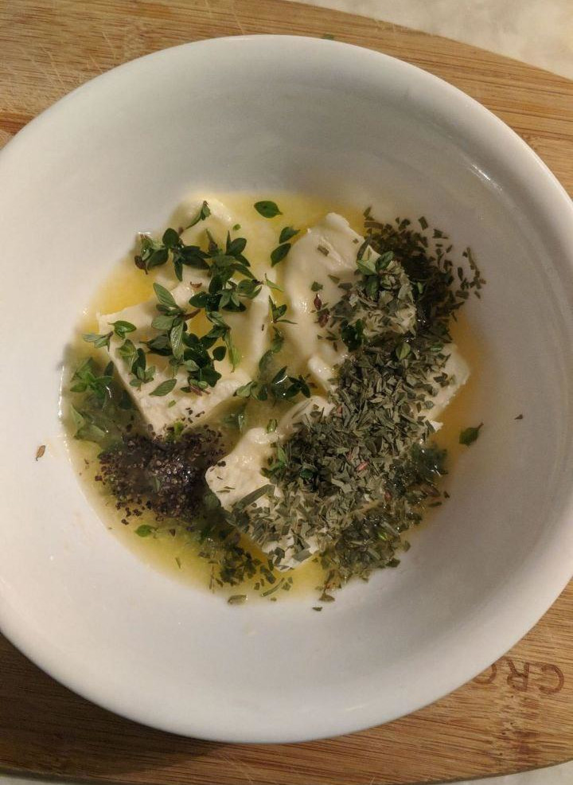

Cooking with Noah: SV Steak and Baked Potatoes w. Sauteed Mushrooms
SV Steak and Baked Potatoes w. Sauteed Mushrooms
Ingredients
Sous Vide Steak
Sous Vide Machine
Cast Iron Skillet
Metal Tongs
Oven Mitts
Freezer Zipper Bags (for Sous Vide)
Large pot or plastic container (for Sous Vide)
Fillet Mignon ~6-12 oz
Salt
Pepper
Fresh Thyme (Optional)
Fresh Garlic
~1/4 Stick Butter (Use your Compound Butter if you made it)
Crispy Baked Potato
Sheet pan or some sort of baking dish (NOT FOIL)
Russet or your preferred baking potatoes
Canola or your preferred high-heat oil
Coarse Salt
Butter (Optional Topping)
Sour Cream (Optional Topping)
Fresh Chives (Optional Topping)
Sauteed Mushrooms
Large Skillet
Cremini Mushrooms (You can also use White Buttons, Oysters, a mix, etc)
~1 Stick Butter
~1/2 Cup Cooking Sherry or a nice Sherry you like
Salt
Pepper
Fresh Thyme (Optional)
Fresh Garlic (Optional)
Compound Butter (Optional)
1/2 Stick Butter
Salt
Pepper
Fresh Herbs of your choice, I use thyme
Fancy vinegar of your choice, I use a fig white balsalmic
Coarse ground mustard of your choice, I use brown
Procedure
Note: These are "in order" but can be done simultaneously
Compound Butter (Optional)
I normally do this first so it can chill in the fridge

Leave butter out or nuke in 5 second increments until very soft
Chop any fresh herbs finely
Combine butter, salt, pepper, and herbs, stir with fork
Add a dash of vinegar, careful to not to exceed a 1:4 ratio of vinegar:butter
Add add your mustard in a ratio 1:4 mustard:butter
Stir with fork until as well combined as possible, draining off any excess liquid that was not emulsified
Stick in fridge to harden, or briefly in freezer if in a rush
Crispy Baked Potato
I do these next and put in the cast iron skillet to preheat at the same time I put these in
Wash potatoes with water and get them as dry as possible
Poke holes in potatoes with fork, allowing steam to escape and preventing bursting
Pour some oil in your hands and then rub the potatoes with the oil. You want oiled potatoes, not potatoes sitting in oil
Pour a copious amount of salt on your hands and rub it all over the potatoes
Bake at 450°F for at least an hour. You can use lower temperatures but it may take longer and we will be using 450° for our steaks
When done, carefully make a cut that doesn't quite go end to end
Using a towel or paper towel or oven mitt to protect yourself from steam, pinch both ends of the potato between your fingers, and then push inwards towards the center. This will open the potato up nicely
Add toppings of your choice
Sauteed Mushrooms
I do these while the steak cooks and then set them aside as we will reheat them later. I recommend nonstick skillets for this.
The sherry isn't optional. Just trust me. It transforms the flavor. Taste a mushroom before and after the sherry and you'll believe me. Under 21 can buy Cooking sherry in any grocer because it's salted and regulated that way.
Mince a clove or two of garlic and your herbs and reserve
Slice your mushrooms into slices not under 1/4 inch and not exceeding 1/2 inch thick. Try to make thickness as uniform as possible.
Melt half of the butter in the skillet on med-high heat and then add the mushrooms, stirring once and a while
They will cook down and start to brown a bit.
Add your herbs/garlic/salt/pepper at this point.
Once those are incorporated and your mushrooms are getting a nice brown, add the sherry and stir frantically.
Once mostly evaporated, add the remaining butter and take off heat, stirring to melt butter and remaining sherry together.
Set mushrooms aside until your steak is done, or serve immediately. I reckon these would go excellent over rice for a vegetarian dish.
Sous Vide Steak
I do this third although sometimes I'll have the sous vide preheat the water so that the steak and potatoes start at the same time
Note: If you don't want to prep your steak Sous Vide, I recommend How to Reverse-Sear a Steak, but SV is easier
If you're looking for a good SV machine, I recommend Anova Nano 750W
Lastly, if you are using SV, you don't need to vacuum seal, but you MUST use a NAME BRAND (Ziploc or Glad) FREEZER bag. This is so that you don't have weird chemicals potentially leaching into your food. This is nuanced, but if you stick to those you should be fine generally
Your cast iron skillet should be preheating empty in a 450° F oven for at least 30 minutes before your SV cook timer ends.
Fill your pot/container with hot water. Preheat your water with your SV machine using this guide. I like my filet mignon medium so I do 135°
Remove your steak from its packaging and add to the bottom of your bag
Peel and crush a clove or garlic or two with the side of your knife, and toss in
Roll and crush any fresh herbs to release flavors, and toss in
Add salt, pepper, and any other dry seasonings you want. You don't need a lot as the SV process concentrates flavors
Zip the bag 90% of the way, and then submerge in water except the opening. This will remove all the air out of the bag. When this is complete, zip 100% and make sure the steak is submerged in the Sous vide water bath once it comes up to temp.
SV for ~1 hr but not exceeding 2 hours (or other if using a different steak, see guide referrenced above for temps/times for diff steaks)
Remove from SV bag and discard everything except ssteaks
CAREFULLY remove the 450° F cast iron skillet and place on your large burner, heat on med-high
Pour a tiny bit of canola or other high-heat oil into the skillet, and quickly move it around with a thick paper towel. Be quick, the towel will ignite if you waste time here.
Plop your steaks into that skillet. Use metal tongs (wear an oven mit and long sleeves to protect from splatter)
Sear each side and the edges, this wont take long and they'll release easily from the skillet once each side is seared. We are using extremely high heat to sear the outside without further cooking the inside of the steak, or will be overdone for what you're targeting.
Turn off the heat and quickly add half your compound butter and all your mushrooms to the skillet, which will melt the butter and coat the steaks and mushrooms with flavor and reheat the mushrooms.
Immediately transfer to a plate to serve. I like to cut mine into strips and surround with mushrooms and then drape sides over it if they're vegetables.
Enjoy some of the best steak you've made at home ever, probably!